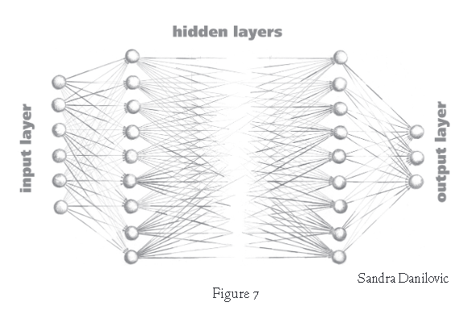

| ZotWeb | book | Src Url |
Smith received his BS, MS and PhD degrees from the Massachusetts Institute of Technology. He was a founder of the Center for the Study of Language and Information at Stanford University, and a founder and first president of Computer Professionals for Social Responsibility. Smith served as principal scientist at the Xerox Palo Alto Research Center, in the 1980s.
(https://en.wikipedia.org/wiki/Brian\_Cantwell\_Smith)
Citer : (Smith, 2019)
FTag: Smith-2019
APA7: Smith, B. C. (2019). The promise of artificial intelligence: Reckoning and judgment. The MIT Press.
Machine Learning 47
ML is essentially a suite of statistical techniques
statistical classification and prediction of patterns
based on sample data
using an interconnected fabric of processors
arranged in multiple layers.
implemented in architectures often known as “neural networks,”

Figure 7 - représentation d'une couche de réseau de neurone avec ses entrées et sorties
articulated reasoning
chains of structured propositions involving implications, negatives, quantification, hypotheticals,
Characteristics of Articulated Reasoning
Identity and nonidentity
Quantification
Variables
Logical operators
Sets
Opacity
Categories and subcategories
Possibility and necessity
Default reasoning